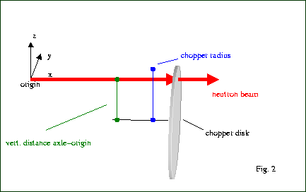
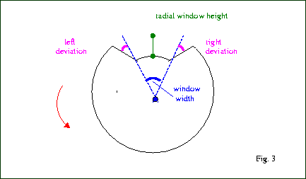
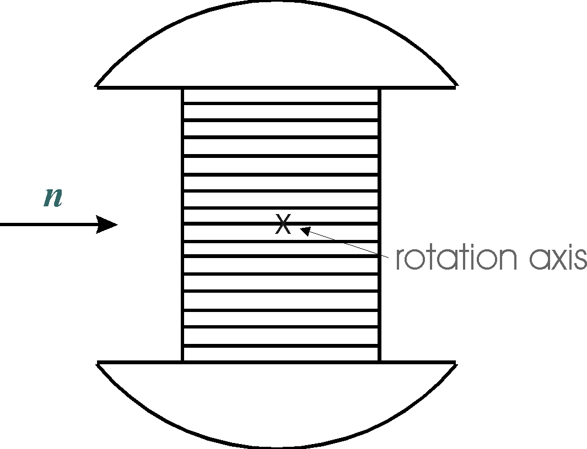
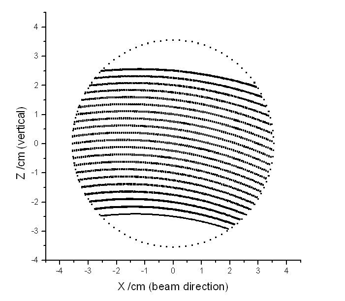

There are VITESS modules for 2 different types of choppers: Disc Chopper and Fermi Chopper. For the Fermi chopper, there are 2 options: Straight Fermi Chopper and Curved Fermi Chopper.
The module chopper simulates the chopping of the neutron beam by a chopper disc.
The orientation, y and z coordinates of the origin defined by the previous VITESS module are maintained, while a shift along the x-axis can be introduced according to the distance between the chopper and the device or window described by the previous VITESS module (x is set to 0 by the chopper module, i.e. a transmitted neutron is written to the output file at the chopper position).
The co-ordinate system, in which the orientation of the chopper disc is given, is a (fixed) system defined by the co-ordinate system of the beamline at the chopper position. The centre is shifted, orientation of y- and z-axes are the same. (Imagine a mark on the edge of the chopper disc pointing into the +z-direction; this defines the phase 0 deg). A positive phase is achieved by a counter-clockwise rotation (seen in the direction of the flying neutrons), cf. Fig. 3.
| Parameter Unit |
Description | range or values | Command option |
| chopper file |
The chopper file describes the geometry and properties of the disc. | -C | |
| rounds / min [cm] |
A positive value means that the rotation angle increases with time,
and a negative value means that the chopper disc operates in the opposite direction of rotation Positive rotation is counter-clockwise seen in the direction of the flying neutrons (as indicated in Fig. 3). |
no restriction | -s |
| Offset [deg] |
This parameter defines the initial rotation angle of the chopper, i.e.the orientation for time = 0.
(The neutron time is initialised in the module source.) Negative values are reasonable for positive rotation (rounds/min > 0) and vice versa |
no restriction | -o |
| distance to previous module [cm] |
The distance along the x-axis between chopper and the reference point of the previous module.
The influence of gravity can be included or omitted during travels of neutrons from X=0 to the chopper plane. |
≥ 0 | -l |
| absorption |
ideal: a trajectory that hits the chopper disc (outside the windows) is removed. Gd: a trajectory that hits the chopper disc (outside the windows) is reduced in intensity according to a wavelength dependent transmission probability for Gd coating of 2 x 0.1 mm assumed, cutoff for wavelength above 6 Ang. Bor: same as Gd, except: transmission coefficients of Bor-10, coating of 2 x 0.25 mm assumed |
ideal Gd Bor |
-g |
| randomize TOF |
no : the time of arrival at the chopper is given by the starting time at the source and the time-of-flight to the chopper. yes: the time of arrival at the chopper is defined by a random choice within the period of the chopper disc, i.e. the real TOF is ignored. The minimal value of the time interval is calculated from the initial offset and the chopper positions to avoid splitting one pulse into two. This option is useful for the first chopper of a TOF instrument on a continuous source. It can be combined with the option 'set zero time' |
yes / no default: no |
-r |
| set zero time |
Yes: The time of the trajectory is set to a value between -T/2 and +T/2 (with T being the period of the chopper),
depending on the phase of the chopper at the moment of crossing. t = Phase_red / RotFreq A time close to zero is only achieved, if the window is open for phase = 0. But in any case the number of pulses is reduced to the number of windows. This option is useful for time-of-flight instruments on constant wave sources. No: nothing happens (default, only option until Vitess 2.3) |
yes / no | -z |
| treat neutrons passing by |
Yes: If there are trajectories which do not hit the chopper disc area, they are written to the output file and considered further on.
In this case, a warning is given including the number of those trajectories (default, only option until Vitess 2.4) No: Trajectories arriving at the chopper plane outside the disc are removed. |
yes / no | -p |
| set colour |
Yes: The number of the window defines the 'colour' of the trajectory. (If the trajectory does not pass a window, the colour is set to zero.) No: nothing happens (default, the only option until Vitess 2.4) |
yes / no | -c |
| Parameter Unit |
Description | range or values | Command option |
| number of windows | Number of apertures of the chopper disc. | ≥ 1 | -N |
| radius [cm] |
The radius of the chopper disc. | > 0.0 | -R |
| vertical position [cm] |
z-component of the position of the chopper axle relative to the origin,
i.e. the center of the beam. If the horizontal positon is zero, the chopper is positioned exactly below the beamline for vert. pos < 0 and exactly above the beamline for vert. pos > 0. If it is below the beamline, the chopper window is open for: rotational angle = 'window position' (see below). If it is above the beamline, the chopper window is open for: rotational angle+180° = 'window position'. |
no restriction | -Z |
| horizontal position [cm] |
y-component of the position of the chopper axle relative to the origin,
i.e. the center of the beam. If the vertical distance is zero, the chopper is positioned exactly left (hor. pos. > 0) or right (hor. pos. < 0) of the beamline (seen in the direction of the flying neutrons). In this case, the chopper window is open for: rotational angle - 90° = 'window position' (left) or rotational angle + 90° = 'window position' (right) resp.. |
no restriction | -Y |

| Parameter Unit |
Description | range or values | Command option |
| window position [deg] |
Position of the window on the disc In case of 1 window, a straightforward choice is to put it to a position that it is open for t=0, i.e. 0 deg for a chopper below the beamline, 180 deg for a chopper above the beamline, 90 deg for a chopper right of the beamline and -90 deg for a chopper left of the beamline (cf. 'vertical position', 'horizontal position'). This value is also given as a note in the output of the run. |
-360° - +360° | -p |
| window height [cm] |
Height of the window. The window is always open to edge of the disc (see Figure 3). |
0.0 - radius | -h |
| window width [deg] |
Aperture of the window in degree (cf. Figure 3) | >0.0° - 360° | -w |
| left side deviation [deg] |
Deviation for left edge of the window in degree. A positive value indicates that the window widens (see Fig. 3). |
-90° - 90° | -l |
| right side deviation [deg] |
Deviation for right edge of the window in degree. A positive value indicates that the window widens (see Fig. 3). |
-90° - 90° | -r |

In this option, the module simulates a Fermi chopper with straight channels i.e. the very
fast neutrons are transmitted with only a time modulation and lower speed
neutrons are modulated both in time of flight and wavelength.
The geometry of the chopper consists of a rectangular shape object with
a wide channel system built in perpendicular direction to the beam (when
transmitting) - this is inserted into a cylinder frame in order not to transmit
neutrons which do not fly throught the channels (when the rectangular channel
system is rotated by 90°). The rotation axix coincides with Z.

| Parameter Unit |
Description | range or values | Command option |
| position X, Y, Z [cm] |
center position of the Fermi chopper in the input frame | X, -Y, -V | |
| height, width [cm] |
height and width of the Fermi chopper channel system | > 0.0 | -a -b |
| channel length [cm] |
length of the Fermi chopper channel system | > 0.0 | -c |
| number of channels | number of straight channels | ≥ 1 | -l |
| wall thickness [cm] |
thickness of the walls between the channels | ≥ 0.0 typical 0.01 |
-m |
| diameter [cm] |
diameter of the shadowing cylinder | > length, width | -r |
| rotations per second [Hz] |
frequency of rotation | > 0.0 | -n |
| phase [deg] |
dephasing angle at zero time | -q | |
| set zero time |
Yes: The time of the trajectory is set to a value between -T/2 and +T/2 (with T being the period of the chopper),
depending on the phase of the chopper at the moment of crossing. t = Phase_red / RotFreq A time close to zero is only achieved, if the window is open for phase = 0. But in any case the number of pulses is reduced to the number of windows. This option is useful for time-of-flight instruments on constant wave sources. No: nothing happens (default, only option until Vitess 2.3) |
'yes', 'no' | -z |
| number of gates |
4: number of gates representing the channels ideal for thermal and best for cold neutrons 6: more accurate but slower 8: most accurate but slowest |
4, 6 or 8 | -p |
This module simulates a Fermi chopper with curved channels i.e. neutrons
are transmitted with a time AND wavelength modulation .
The geometry of the chopper consists of a horizontal cylinder with a wide
channel system built in vertical direction (when transmitting). At the entrance
all channels have the same height, at the exit the channel height depends
on the vertical position and other parameters in order to transmit all neutrons
having 0 divergence and the nominal (main) wavelength. See figure below.
The alghorhythm works with rotating chopper framework. Neutrons reflected
on the channel walls are absorbed.
| Parameter Unit |
Description | range or values | Command option |
| geometry file |
output file of the curved channel geometry (for scatter plot of the last two columns, first column: channel index, 0 = envelope) |
-G | |
| position X, Y, Z [cm] |
center position of the Fermi chopper in the input framework | X, -Y, -V | |
| height, width [cm] |
height and width of the Fermi chopper channel system | > 0.0 | -a -b |
| channel length [cm] |
length of the Fermi chopper channel system | > 0.0 | -c |
| number of channels | number of curved channels | ≥ 1 | -l |
| wall thickness [cm] |
thickness of the walls between the channels | ≥ 0.0 typical 0.01 |
-m |
| diameter [cm] |
diameter of the shadowing cylinder | > length, width | -r |
| rotations per second [Hz] |
frequency of rotation | > 0.0 | -n |
| phase [deg] |
dephasing angle at zero time | -q | |
| optimal wavelength [A] |
optimal wavelength to be transmitted at highest intensity | > 0.0 | -L |
| set zero time |
Yes: The time of the trajectory is set to a value between -T/2 and +T/2 (with T being the period of the chopper),
depending on the phase of the chopper at the moment of crossing. t = Phase_red / RotFreq A time close to zero is only achieved, if the window is open for phase = 0. But in any case the number of pulses is reduced to the number of windows. This option is useful for time-of-flight instruments on constant wave sources. No: nothing happens (default, only option until Vitess 2.3) |
'yes', 'no' | -z |
| channel shape |
circular: channels have circular shape ideal: channels close to parabolic shape |
-g | |
| number of gates |
4: number of gates representing the channels ideal for thermal and best for cold neutrons 6: more accurate but slower 8: most accurate but slowest |
4, 6 or 8 | -p |

Back to VITESS overview
vitess@fz-juelich.de
Last modified: 2021-07-22 KL